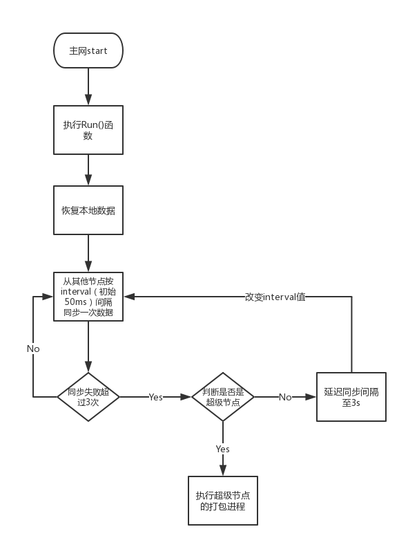
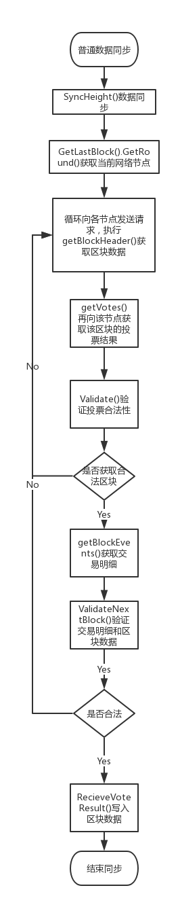
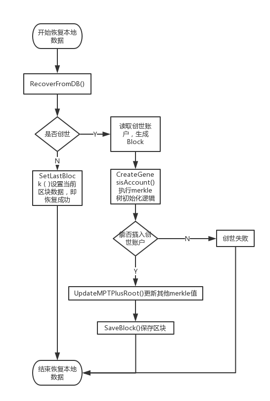

前言
笔者做了一段时间的区块链底层开发，深知架构设计的重要性。对于高手来说，没有的轮子是可以自己造的，造个大规模消息/任务队列都只是想不想写的事情。但在企业中开发，追求的是稳定、性能、成本等等，所以通常希望使用开源组件，二次开发。
解析过EKT项目，鉴于自己还不是高手，把认为对自己有用的点都总结下。
账户设计
和ETH类似，用了账户模型，结合Merkle树进行设计，通过记录nonce值防止双花攻击。
核心逻辑：
func GenerateKeyPair() (pubkey, privkey []byte) {
key, err := ecdsa.GenerateKey(S256(), rand.Reader)
if err != nil {
panic(err)
}
pubkey = elliptic.Marshal(S256(), key.X, key.Y)
return pubkey, math.PaddedBigBytes(key.D, 32)
}
EKT采用ECDSA（椭圆曲线数字签名算法）生成地址，secp256k1方法作为该算法参数。
工程中，ecdsa和sha3_256算是两个主流加密算法。ecdsa(椭圆曲线数字签名算法)是一种非对称公钥加密算法，也是数字签名算法类比中的佼佼者，用于防止数据串改和验证数据真实性，对标RSA算法。sha3_256是一种哈希算法，也叫摘要技术，防止数据被篡改。
ECDSA相比于RSA有如下特点：
- ECDSA的加密密钥更短
- ECDSA的加密运算更快而安全性和RSA相当
- RSA的私钥和公钥是可以互换加解密的，但ECDSA只能私钥加密公钥解密
ECDSA的核心是利用数论中大数分解比较困难。这里列出一些推荐的扩展阅读：
存储相关
EKT的数据库采用LevelDB和sync.map。LevelDB是Key-Value型数据库，用于数据持久化。sync.map是一种GO语言的数据结构，可用于缓存。EKT封装了sync.map，开发了自己的内存型K-V数据库。
早期，有两个核心的文件：db/levedb.go和db/MemKVDatabase.go。
在实际代码中，EKT将本地KV和内存KV组装在一起，构成混合型KV数据库。核心文件db/ComposedKVDatabase.go 代码：
type ComposedKVDatabase struct {
mem *MemKVDatabase // 引用内存型K-V数据库
levelDB *LevelDB // 引用本地K-V数据库
}
// 抽象该混合型KV数据库
func NewComposedKVDatabase(filePath string) *ComposedKVDatabase {
return &ComposedKVDatabase{
mem: NewMemKVDatabase(),
levelDB: NewLevelDB(filePath),
}
}
该数据库只有三个常用方法：
- Set(key, value []byte):插入数据
- Get(key []byte):查找数据
- Delete(key []byte):删除数据
因为采用线性结构的区块链基因，所以并不会涉及update。
随着代码的迭代，笔者实测后发现：数据存在丢失的情况。之后，EKT官方去掉了自己的内存型K-V数据库，仅保留了leveldb相关。
这里，再次证明，稳定性好的东西，实在不好做。
链结构相关
链的结构包含了14个元素，依赖了外部包：i_consensus/consensus.go, pool/TxPool.go, police.go, block_manager.go
type BlockChain struct {
ChainId int64
Consensus i_consensus.ConsensusType // 确认采用DPoS，Pow, Pos
currentLocker sync.RWMutex
currentBlock Block
currentHeight int64
Locker sync.RWMutex
Status int
Fee int64
Difficulty []byte
Pool *pool.TxPool // 交易池
BlockInterval time.Duration
Police BlockPolice // 用于记录从其他节点过来的block
BlockManager *BlockManager // 区块管理器
PackLock sync.RWMutex
}
各字段的解释官方没有给出，之后通过对代码的详细分析，再给出精准定义。
简单提下创世过程。当主链在启动时发现没有区块的时候，将执行写创世区块的功能。
创世核心源码：
// 将创世块写入数据库
accounts := conf.EKTConfig.GenesisBlockAccounts
block = &blockchain.Block{
Height: 0,
Nonce: 0,
Fee: dpos.Blockchain.Fee,
TotalFee: 0,
PreviousHash: nil,
CurrentHash: nil,
BlockBody: blockchain.NewBlockBody(),
Body: nil,
Timestamp: 0,
Locker: sync.RWMutex{},
StatTree: MPTPlus.NewMTP(db.GetDBInst()),
StatRoot: nil,
TxTree: MPTPlus.NewMTP(db.GetDBInst()),
TxRoot: nil,
TokenTree: MPTPlus.NewMTP(db.GetDBInst()),
TokenRoot: nil,
}
// 为每个创世账户更新默克尔树根
for _, account := range accounts {
block.CreateGenesisAccount(account)
}
// 更新默克尔树根，改变StatRoot,使得block.StatRoot = block.StatTree.Root
block.UpdateMPTPlusRoot()
// 计算当前区块Hash值
block.CaculateHash()
// 持久化
dpos.Blockchain.SaveBlock(*block)
获取创世区块的账户(可以是多个账户)，由主链启动时配置得到。生成首个区块的数据，做了一些改动后，写入数据库。
主链启动
经过对主链、共识机制的初始化，再运行共识模块的Run()即可启动。
主要有两步：
- 从本地数据库中恢复当前节点已同步的区块
- 同步区块
其中，同步区块方面有3个核心步骤：
- 从其他节点同步，执行dpos.SyncHeight(Height)
- 当区块同步失败，尝试3次，3次之后判断是否超级节点
- 如果当前节点同步失败，且是超级节点，则通过投票结果来同步区块，执行dpos.startDelegateThread()进入打包区块的流程
主网启动流程图如下：

数据同步与恢复
一般是刚启动的节点从其他节点同步数据。
- 第一步：GetRound()获取当前打包节点信息
- 第二步：循环向各个节点发送请求，执行getBlockHeader()获取区块数据
- 第三步：再请求该区块的投票结果，执行getVotes()获取投票结果
- 第四步：执行Validate()校验投票结果的完整性和真实性，不合法重复第二步
- 第五步：校验合法后，执行getBlockEvents()获取交易明细数据，再执行ValidateNextBlock()验证交易明细数据和区块数据是否合法，不合法重复第二步
- 第六步：以上都合法，执行RecieveVoteResult()写入区块
流程图如下：

后续会对RecieveVoteResult()单独分析，该函数集成的功能较多，包括：验证投票、管理区块、改变状态、记录打包间隔、写区块等功能。
本地数据恢复流程，一图可以描述，不再多说。

结语
这篇文章的内容已经足够长且多。如果反响不错，会继续在深入写下对别人有价值的东西。
真正理解，还需要多多阅读源码。